01 O dia
Lumeira acende as luzes antes de escurecer. Todo dia.
Uma cidade costeira viva: a feira da praça, a Forja da Odete, a taverna da Tia Nilza. A grande lanterna de bronze mantém a cidade deste lado.
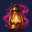
Véspera Baixar beta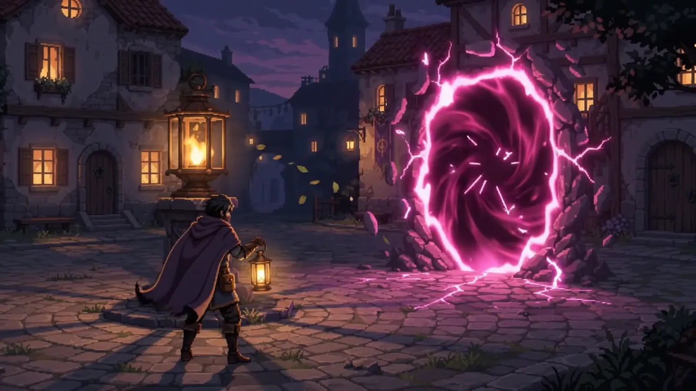
Beta grátis · Windows · Parte 1 completa
RPG de ação 2D em pixel art
Toda véspera, Brechas se abrem em Lumeira.
Alguém precisa fechá-las.
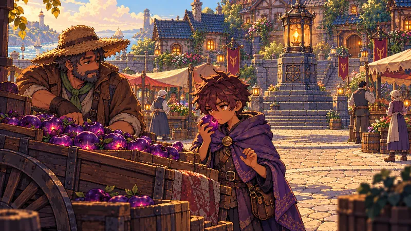
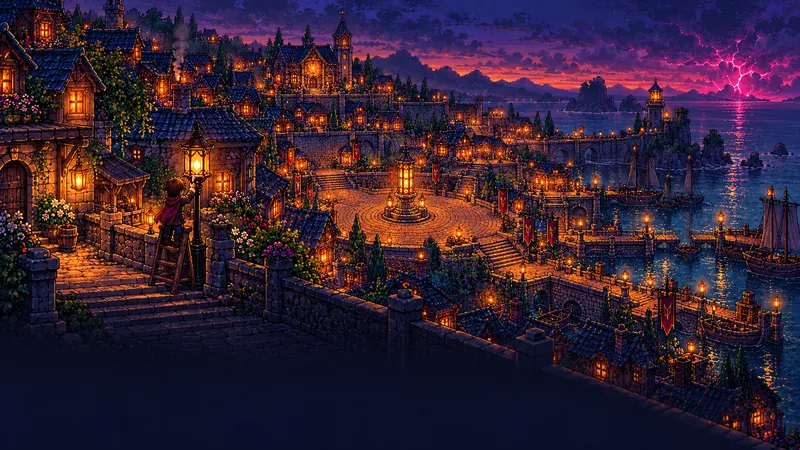
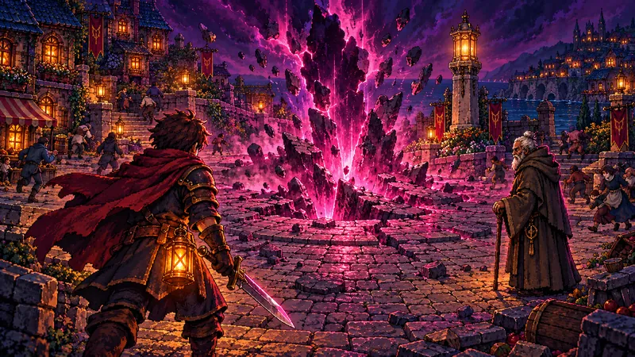
01 O dia
Uma cidade costeira viva: a feira da praça, a Forja da Odete, a taverna da Tia Nilza. A grande lanterna de bronze mantém a cidade deste lado.
02 A véspera
Foi o Ano Sem Sol. Desde então, todo fim de tarde, a véspera, Brechas se abrem nos bairros e cospem monstros.
03 A Brecha abre
Do outro lado fica o Avesso, “Lumeira de cabeça pra baixo”, onde cai tudo que a cidade perde. Você chega com uma lanterna velha e um selo E queimado no pulso.
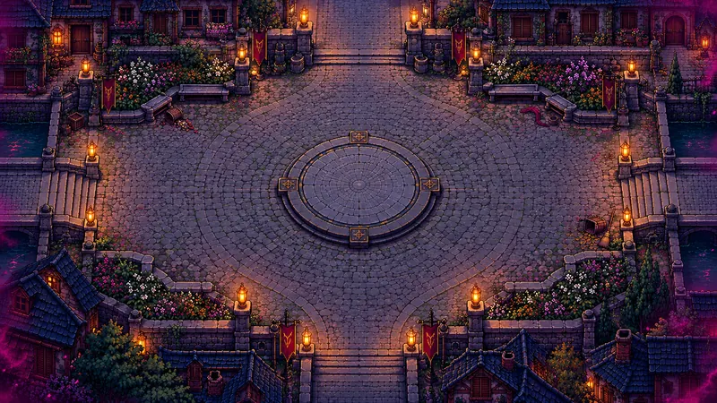
✦ A Lanterna
Morrer não apaga o seu progresso: os Fragmentos da caçada ficam na sua Lanterna, no chão da Brecha, até você voltar para buscar. O seu equipamento nunca se perde.
Mova o mouse para iluminar a praçaArraste o dedo para iluminar a praça
✦ Como se joga
De dia, Lumeira vive. Quando a véspera chega, uma Brecha abre em algum bairro. O ciclo tem quatro passos.
Entre na Brecha, limpe as salas e derrube o Guardião. Leia o aviso âmbar no chão e saia da frente.
O cristal que cai dos monstros é a moeda da forja. Guardiões deixam material e, às vezes, peças do seu conjunto.
Leve tudo à Forja da Odete. A arma sobe de nível e, a cada patamar, ganha nome novo: a Lâmina de Ferro Frio vira a Espada das Marés.
Experiência e conquista: vença o Guardião do seu rank e passe nos exames da Ordem para queimar o próximo selo. O caçador muda de visual em 5 estágios.
As Bênçãos da Lanterna vêm em 5 famílias, cada uma com a cor de alguém da cidade:
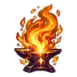
Chama Odete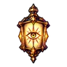
Vigília Benício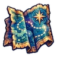
Mapa Lis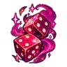
Aposta Ravi✦ Os bairros
Cada bairro tem a sua Brecha, e cada Brecha herda o tema do bairro onde abre. Use Ver a Brecha para atravessar.
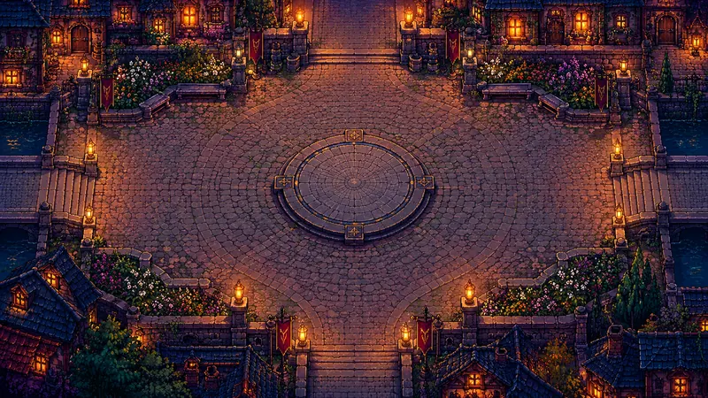
Prólogo
O coração da cidade. É aqui que a Brecha abre no dia em que você chega.
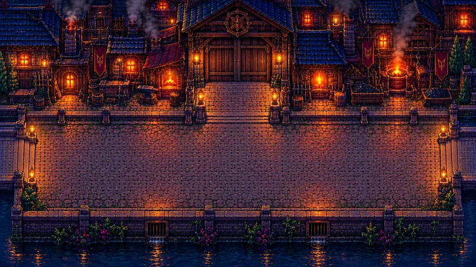
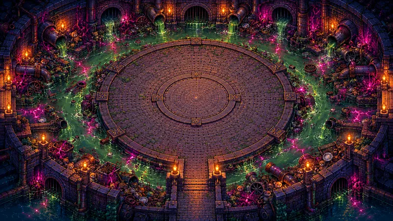
Ato I · Esgotos do Mercado
Onde fica a Forja da Odete. Embaixo, Lodos que pulam e Espectros que atravessam paredes.
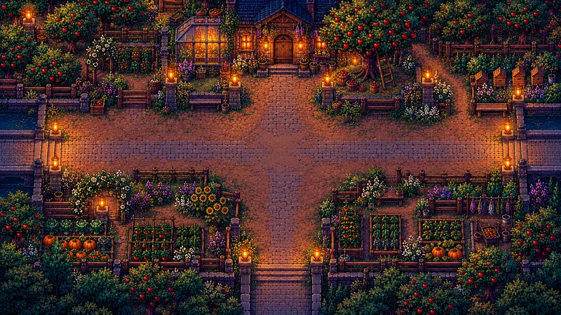
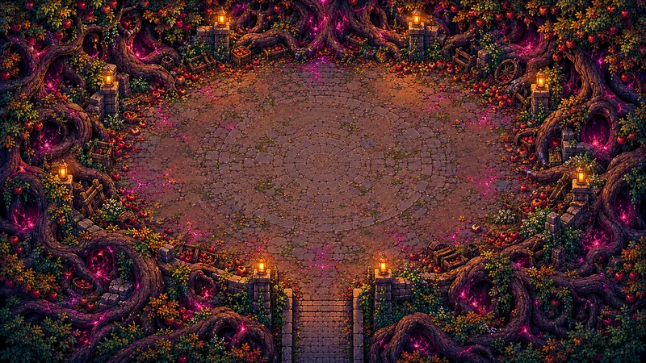
Ato II · Pomar Podre
As macieiras da Dona Celeste apodrecem de dentro. Lá embaixo, Carrapichos e Ratos-Lanterna.
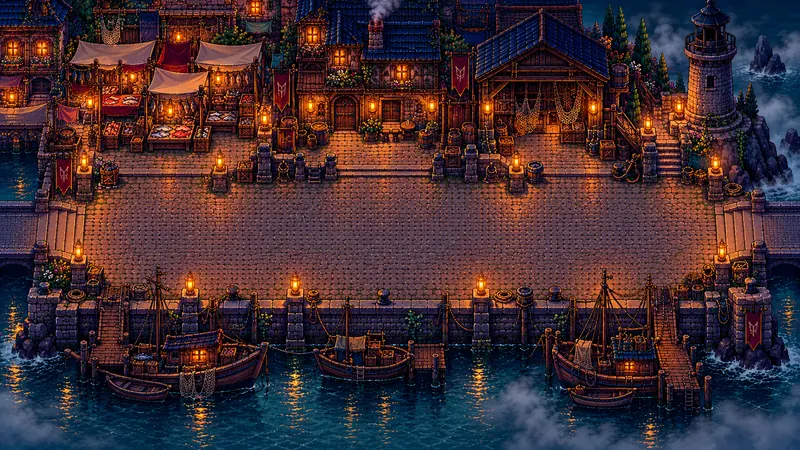
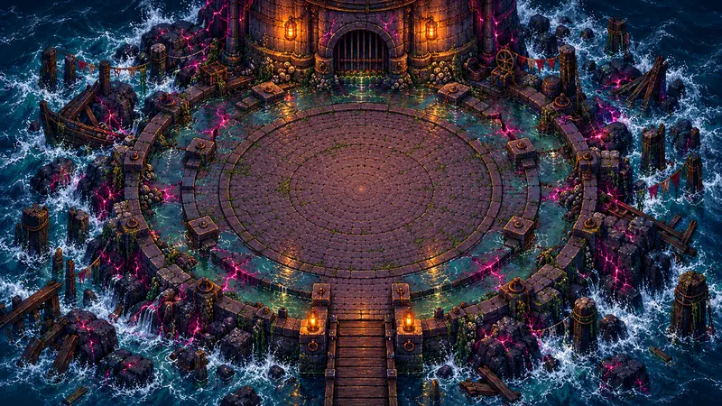
Ato III · Cais Afogado
O porto na noite da Festa das Lanternas, do lado de baixo. Afogados, Ancoreiros e uma sala alagada.
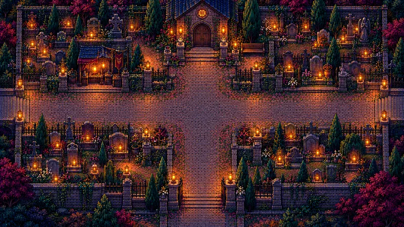
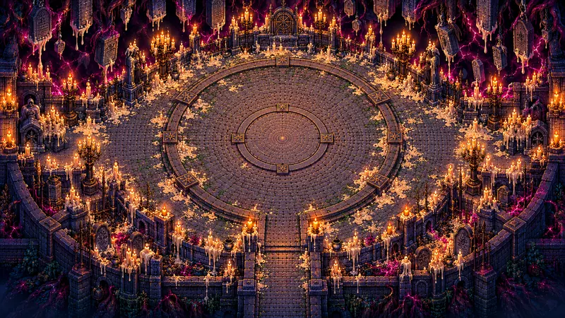
Ato IV · Cemitério das Lanternas
O cemitério de antes do Ano Sem Sol, de cabeça para baixo. Carpideiras, Cães-de-Vigília e Velinhas.
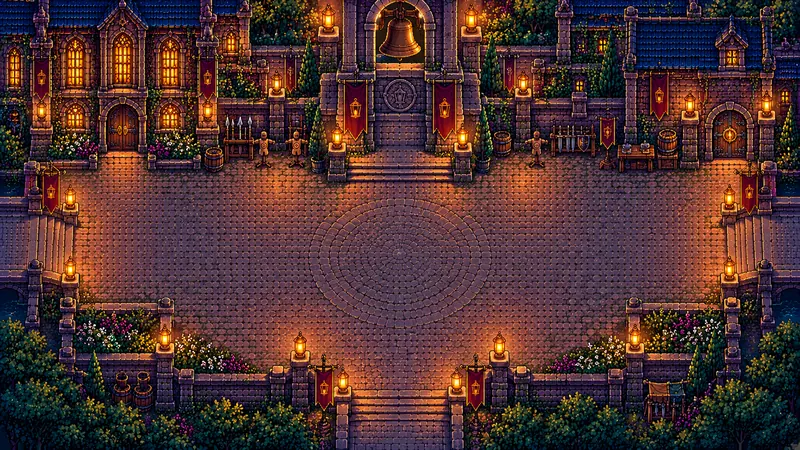
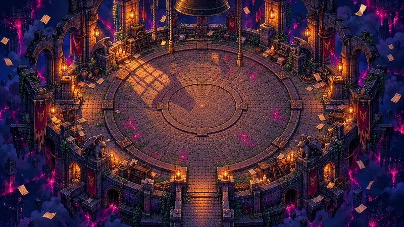
Ato V · Sino Mudo
A Torre na noite do ritual. Tem uma Sala do Silêncio: sem som nenhum, só avisos visuais.
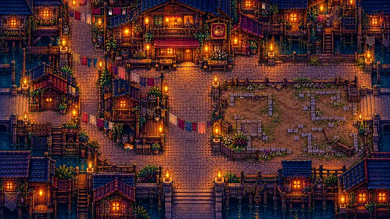
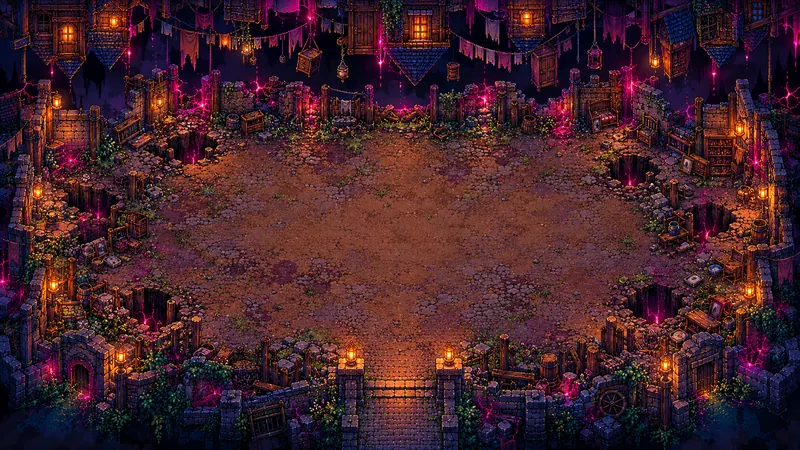
Ato VI · Ruas Invertidas
As Ruas Baixas de antes das demolições, com casas penduradas do teto. Varais, Despejados e Rasgos.
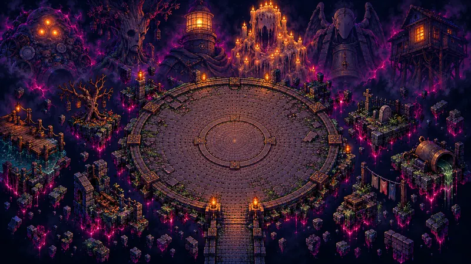
Ato VII · e o Final
A fenda da praça desce para bairros misturados. Lá embaixo, os ecos dos Guardiões. O resto é com você.
✦ Os Guardiões
Quando ele cai, deixa um Eco, uma habilidade só dele, e pode deixar peças do seu conjunto de armadura. Passe o mouse ou toque para provocar.
✦ A escada de ranks
O selo é a marca do rank no pulso. Cada rank pede experiência e conquista.
E
O recém-chegado.
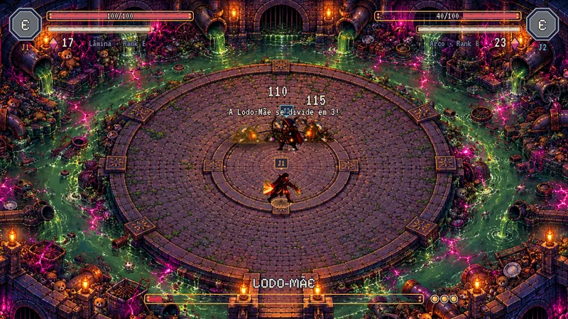
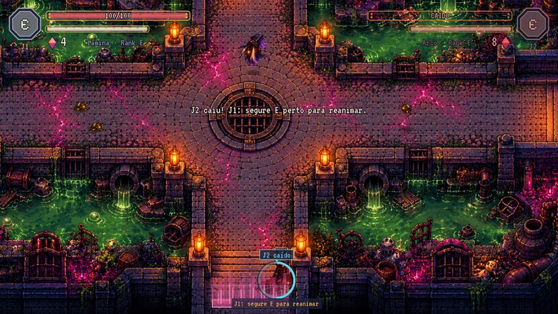
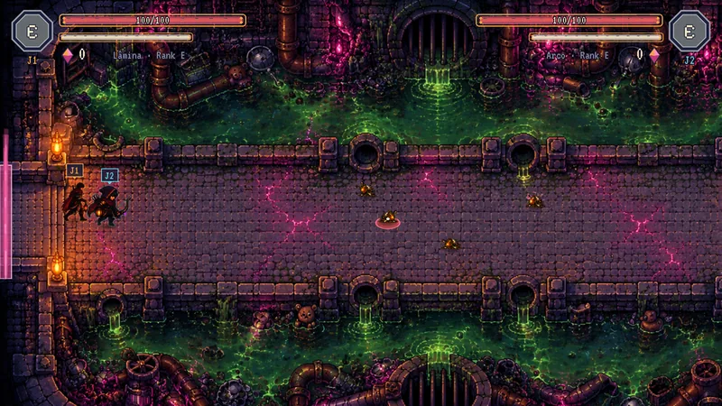
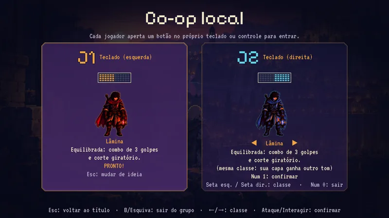
✦ Co-op local
Chame alguém para o seu lado: 2 jogadores no mesmo PC, com teclado e controle, metade do teclado para cada um ou dois controles.
Co-op online: primeira versão (beta). No título, escolha Online: um jogador hospeda e o outro entra pelo IP. Já conecta e sincroniza a caçada, mas a visão do convidado ainda está simplificada e sendo terminada.
“Lâmina não quebra. Caçador quebra. Vai buscar.”
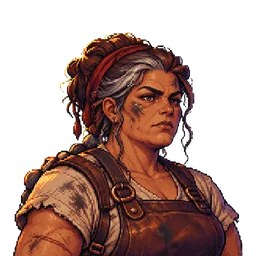
Odete, a ferreira✦ Gente de Lumeira
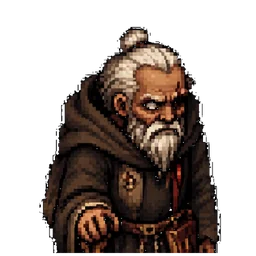
“Fecha ela. Mata o que tem dentro e ela fecha sozinha.”
“Sem Fragmento, sem forja. Fecha a Brecha primeiro.”
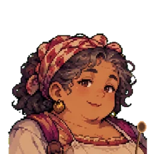
“Primeira Brecha e já volta inteiro. Come.”
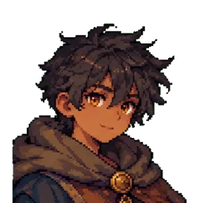
“Aposto a sopa que eu fecho mais salas que você.”
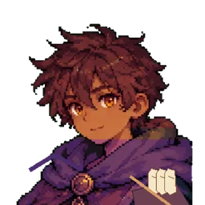
“Hoje abre no Bairro das Forjas.”
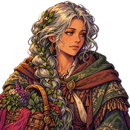
“Lá dentro é o pomar de antes. Não come nada.”
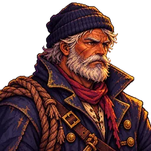
“Sabe nadar? Lá dentro não adianta.”
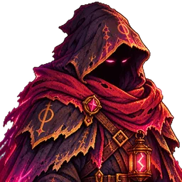
“Quando um Guardião cai, às vezes deixa um pedaço. Chama Eco.”
✦ Trailer oficial em breve
Uma prévia montada no seu navegador com a abertura, o prólogo, as ilustrações, os mapas e as capturas reais do jogo, ao som da trilha original.
No GitHub, use Watch → Custom → Releases para receber um aviso quando o trailer e as novas versões saírem.
✦ Direto do jogo
Clique para ampliar. Use as setas do teclado ou arraste para passar.
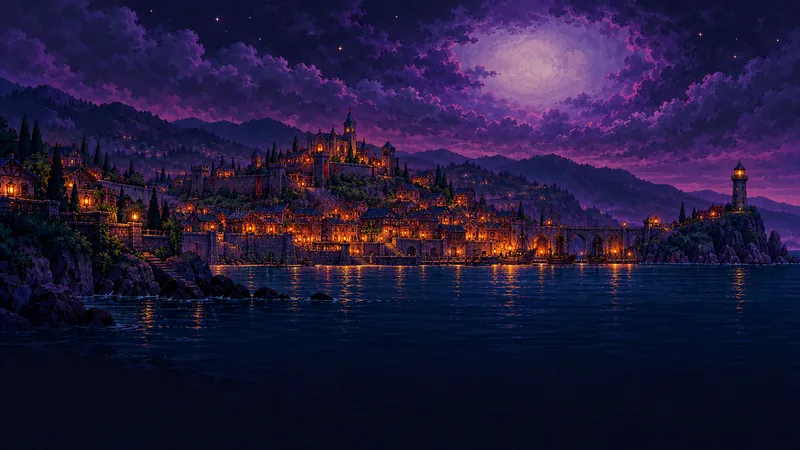
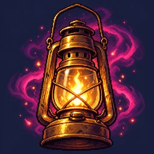
✦ Beta grátis
A Parte 1 está completa: Atos I a VII e o Final. Para Windows, feito com Godot 4 e C#, com o código aberto no GitHub.